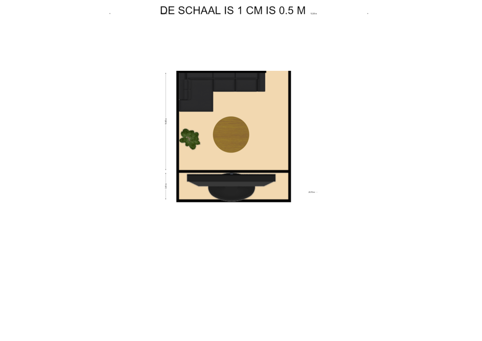
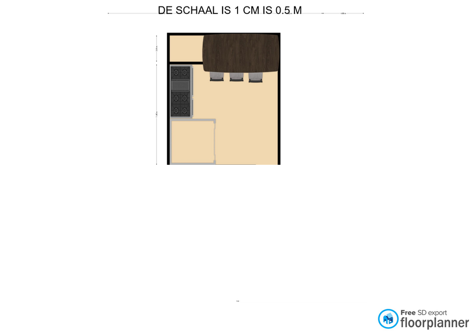

Plattegrond:
Alle plattegronden die zijn gemaakt door Robin
Als eerst de complete plattegrond

De eerste kamer, de kamer links onder/de woonkamer.
De tweede kamer, de kamer rechts onder/de keuken.
De derde kamer, de kamer links boven/de slaapkamer.

En als laatst de laatste kamer, de kamer rechtsboven/de badkamer.

3D ontwerp:
Tv en spel:
De code en hardware gemaakt door Jack om de tv te maken met het spelletje 'among rush'.